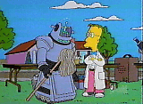
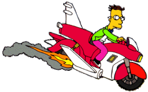
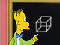

Profesor Frink
 De: La Frikipedia, la enciclopedia extremadamente seria.
De: La Frikipedia, la enciclopedia extremadamente seria.
De la serie grandes personajes:
El profesor Frink, dándole uso a un par de hamburguesas
| Nacimiento
|
1 a.C. (antes de la ciencia)
|
| Muerte
|
Físicamente imposible
|
| Ocupación
|
Científico loco
|
| Nacionalidad
|
Springfieldiano
|
| Malo o bueno
|
Neutrón
|
| Atentados contra la humanidad
|
Descubrir el Frinkaedro
|
| Religión
|
Einsteinismo
|
| Notas
|
¡¡Wiin!!¡¡Wiin!!
|
 El profesor Frink, castigando a su mascota por pasar mal el mocho
«¡No puedo salir del observatorio! ¡otros astrónomos lo están esperando para ocuparlo, y se me están acabando los microscopios para arrojarles!»
~ Profesor Frink sobre su observatorio
«El profesor Frink, el profesor Frink, les hará pensar, les hará reír y con una chica le gusta tararí»
~ Profesor Frink sobre su vida
«Tardará años en descifrar el algoritmo de los pepinillos»
~ Profesor Frink sobre sus hamburguesas-orejeras
«Está atrapado en un cubo, o Frinkaedro, en honor a su descubridor»
~ Profesor Frink Alardeando de sus conocimientos
«Participé en una operación llamada ¡¡HOYVIN MAYVIN!!»
~ Profesor Frink tratando de ser discreto
«Yo tengo un autentico sable laser, con sus winnn, y el winnn, y el winn...»
~ Profesor Frink en un congreso friki
El profesor John Nerdelbaum Frink, Jr es el inventor de Abuelo Simpson.
Biografía
Nació fruto de un experimento fallido por parte de su padre de crezar su propio Haloween como lugar de tortura. Su ultra arma final, la zarigüeya de juguete láser destruirá a la humanidad. Ya se ha salido de su eje y dentro de nada el proceso de dominación mundial estará completo y Frink será amo del mundo...
Gustos
 Aquí le vemos "investigando a qué huelen las nubes"
- Los robots
- Los microscopios
- Los observatorios
- Ver tías desnudas desde su observatorio
- Instruir a los niños de párvulos cuando los profesores están en huelga, y convencerles que no pueden disfrutar a tantos niveles como él con un aparato con bolas de colorines.
- Conspirar contra el mundo
- Inventar cosas extrañas y
inútiles de gran utilidad
- Hacerle ver su futuro a los niños
- Resucitar a su padre para que se convirtiera en un zombi y consuma celebros (¿pensabas que era un fallo de cálculo? ¡Estaban compinchados para dominar el mundo!).
- Las chicas con coletas
Disgustos
- La humanidad
- Tener 200 de cociente intelectual... PAM! 199, 198, 197
- No conseguir que Homer se rompiera la espalda cuando le dio una montaña de libros sobre inventos.
- Que los astrónomos ataquen su observatorio
- Que se le acaben los microscopios
- Que Carl y Lenny usen microscopios para avanzar en
sus prácticas de esgrima su investigación en vez de dárselos para unirse los tres en una coalición observatorista y destruir a todos los astrónomos de los alrededores.
- Saber que en el futuro se suicida, probablemente por el consumo masivo de psicotrópicos (o igual piensas que ha nacido así de loco...)
Inventos-descubrimientos del profesor Flink
 Su mayor descubrimiento hasta la fecha
- Orejeras de hamburguesa.
- Teletransportador de materia.
- Moto voladora
- Frinkaedro
- Máquina de ver el futuro
- Marcador automático con ruedas
- Robot jugador de ajedrez
- Robot de limpieza
- Zapatos de claqué con sensor de sonido
- Zarigüeya de juguete láser (muy atento si te la encuentras, se ha salido de su eje y está sedienta de sangre).
- Máquina que te dice quien va a ganar un partido.
- Prepucio de látex 100% reciclable
- Furciometro
- Novia Robot
- Detector de Sarcasmo
- Edificio de seguridad que posee piernas y que huye a un lugar seguro para arder
Cosas que Frink nunca debería haber inventado
Autor(es):
- Ewok
- Frikiman
- El Sevillano
- Move Zig
- NoxBand91
- Wif
- Cabezon
- Zalteck
- Trabuconodosor
- Cibercrank
Frikipedia 2005-2016, Licencia
GFDL 1.2 - Extraído por FrikiLeaks